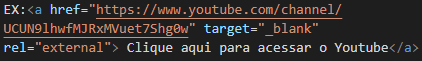
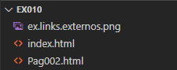
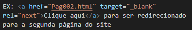
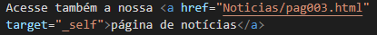

Link externo é um link que nos leva para outro site (que no caso, não será o nosso).
EX: Clique aqui para acessar o Youtube
Basicamente quando se quer usar links externos no nosso site, basta nós colocarmos um pequeno texto ou palavra, como o nome do site ou algo do tipo, e então é so envelopar essa palavra ou frase e adicionar a tag "a" (de âncora) e colocar dentro das aspas do campo de referência o seu link desejado, assim como no exemplo que foi mostrado acima.

Exemplo na prática da utilização de links externos.
É de SUMA importancia que sempre que você for utilizar links externos, você também utilize os parametros target="_blank" e rel="external" para que se quando clique no link, o navegador abra uma nova página para acessar o link, caso esses parametros não sejam usados, seu site vai ser sobreposto pelo seu link externo (e isso não é legal kkkkk).
Link interno é um link que redireciona o usuario para outra página dentro da nossa propria pagina.
EX: Clique aqui para ser redirecionado para a segunda página do site
Para criar um link interno basta que você tenha criado uma outra página e que esta página esteja dentro da mesma pasta do seu documento que vai fazer a ligação, de modo em que as duas páginas apareçam na mesma pasta dentro do VSCode, como mostra a imagem abaixo:

E para criar esse link, também usa-se a tag "a", a única diferença é que na hora de colocar a referência (site), basta que você acione o comando CTRL + ESP e selecionar a página que você deseja linkar.
Ao usar esse sistema de links internos é muito importante que você diferencie no link se você vai voltar uma página ou vai avançar uma página, e isso se faz quando você coloca o parametro "rel" dentro da tag "a" (NÃO SE ESQUEÇA DISSO!).
Exemplo a seguir:
">
O exemplo acima mostra uma das aplicações do parametro "rel", onde ele é usado para indicar ao navegador que o link em questão irá avançar uma página.
E temos ainda mais um parametro que serve de especificação ao navegador que é o argumento "_self" dentro do parametro "target" que colocamos dentro da tag de links.
O target = "_self" serve para indicar ao navegador que o link em questão, vai abrir na mesma aba do seu site, ou seja, ele não vai criar uma nova aba pra abrir o contéudo do link (até por que não fica legal abrir todos os links do seu site em novas abas, fica zoado e força o usuário a abrir muitas páginas no navegador, então a dica é: dose a quantidade de links que serão abertos em novas abas).
Segue o exemplo a seguir:
Acesse também a nossa página de notícias

Vamos ver a seguir como se coloca link para download de um arquivo zipado, exemplo a seguir: